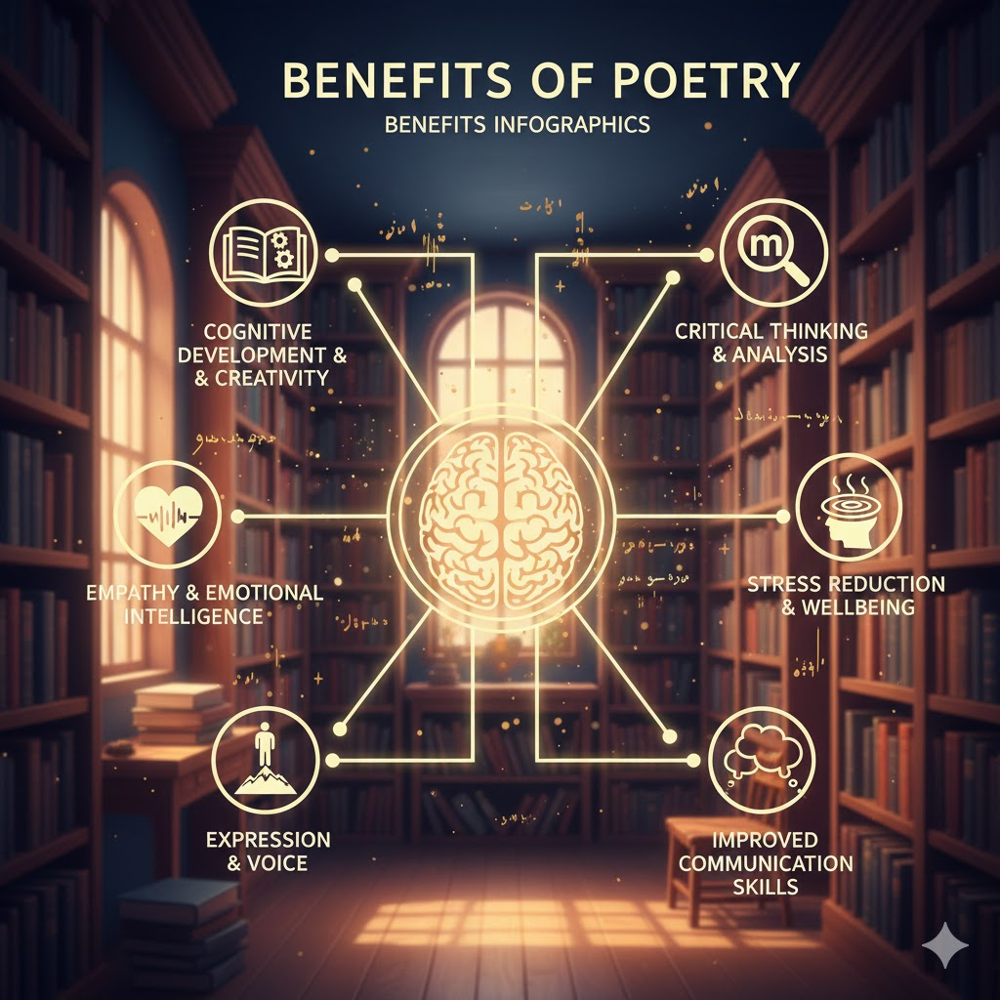

Poetry is a powerful form of expression, transcending the mere utility of language to harness its deepest aesthetic and emotional qualities. Unlike prose, poetry relies on meticulous word choice, rhythm, and sound to create a concentrated and evocative experience for the reader. It is fundamentally an art of compression, where complex feelings, ideas, and observations are distilled into lines and stanzas.

A poem can capture a fleeting moment, explore a profound philosophical question, or tell a sweeping narrative. Its structure can vary widely, from the rigid fourteen-line discipline of a sonnet to the unconstrained flow of free verse. Key elements like meter, rhyme, alliteration, and metaphor work together to generate a musicality and imagery that resonates beyond the literal meaning of the words.
Ultimately, poetry is a form of communication that seeks to move, challenge, and illuminate. It offers both the poet and the reader a unique lens through which to view the human condition and the world around us, inviting introspection and a deeper engagement with the textures of life.